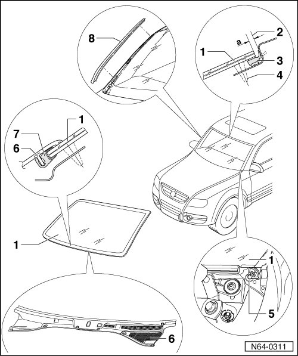

Windshield, Servicing and Assembly Overview
Flush Bonded Windows
Windshield, Servicing
• Before replacing windshield, see if it is possible to repair the glass.
Windshield Assembly Overview

1 Windshield
• Removing and installing windshield, refer to --> [ Windshield ] Flush Bonded Windows
2 Dimension - a - = 4 mm
3 Sealing lip
• Due to the narrow gap to edge of roof, damage to the sealing lip cannot be avoided. If the windshield is to be reinstalled, a so-called service sealing lip has been developed.
4 PUR adhesive sealant
• Bead cross section: width = 8 mm height = 12 mm (including excess material on the window glass and window flange)
• Minimum curing time, refer to --> [ Minimum Curing Time ] Flush Bonded Window Installation Information and Minimum Curing Time
5 Window adjuster
• To achieve a uniform gap dimension.
6 Plenum Chamber Cover
• Clipped
• The plenum chamber cover must be pulled off windshield seal by hand only.
• Plenum Chamber Cover, Removing and Installing, refer to --> [ Plenum Chamber Cover ] Flush Bonded Windows
7 Binding profile
• Is a part of the windshield
8 Drip rail
• Clipped
• The water deflector may be removed by hand only.